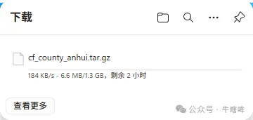
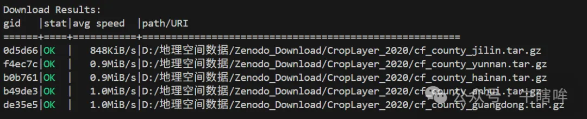

摘要LLM 归库摘要
- 核心内容： 用 Zenodo REST API 获取 record 文件列表与 MD5，生成 aria2c 输入清单，断点续传并行下载，最后逐文件校验 MD5。
- 适用场景： 单细胞或生信数据集存放在 Zenodo，网页下载慢或中断时；输入为 record ID 与目标文件列表，输出为已下载文件与校验报告。关键参数为
RECORD_ID、OUT_DIR、TARGET_FILES、CONNECTIONS_PER_FILE、PARALLEL_FILES。- 下一步处理： 安装
requests tqdm PySocks与aria2c；将示例的RECORD_ID/OUT_DIR/TARGET_FILES改成实际数据；建议先用小文件试跑，再开全量下载。- 归库说明： 归类为 03 生信教程与工具库方法页，远程脚本归档到
hz-bioinfo-codes/04_数据下载与备份/4.1_Zenodo加速下载/。
Zenodo 数据快速下载
Zenodo 是 CERN 数据中心支持的科研数据存储库。网页直接点击下载通常只有 100-200 kB/s 且容易中断，改用 Zenodo 官方 REST API + aria2c 断点续传 + MD5 校验会更稳定。
方案#
Python requests调用https://zenodo.org/api/records/<record_id>，拿到files[].key、files[].checksum、files[].size。- 按需过滤
TARGET_FILES，生成zenodo_aria2_urls.txt，每条记录包含下载 URL 和out=文件名。 - 调用
aria2c -i 清单 -c -x 4 -s 4 -j 2断点续传、分块并发下载。 - 用 Zenodo 返回的
md5:校验值逐文件校验，失败文件提示删除重下。
环境准备（Windows PowerShell）#
python -m pip install -U pip
python -m pip install requests tqdm PySocks
python -c "import requests, tqdm; print('Python packages OK')"
winget install -e --id aria2.aria2
aria2c --version
关键参数#
RECORD_ID = "14726428"
OUT_DIR = Path(r"D:\Zenodo_Download\CropLayer_2020")
TARGET_FILES = [] # 空列表 = 下载全部；非空 = 只下载指定文件
CONNECTIONS_PER_FILE = 4 # 单文件连接数，不要过大
PARALLEL_FILES = 2 # 同时下载文件数
HEADERS = {"User-Agent": "Zenodo-Downloader/1.0"}
完整脚本#
from pathlib import Path
from urllib.parse import quote
import hashlib
import subprocess
import requests
import sys
RECORD_ID = "14726428"
OUT_DIR = Path(r"D:\Zenodo_Download\CropLayer_2020")
TARGET_FILES = []
CONNECTIONS_PER_FILE = 4
PARALLEL_FILES = 2
HEADERS = {"User-Agent": "Zenodo-Downloader/1.0"}
def fetch_record_metadata(record_id: str) -> dict:
api_url = f"https://zenodo.org/api/records/{record_id}"
response = requests.get(api_url, headers=HEADERS, timeout=60)
response.raise_for_status()
return response.json()
def normalize_checksum(checksum: str) -> str | None:
if not checksum:
return None
if checksum.startswith("md5:"):
return checksum.split("md5:", 1)[1]
return checksum
def build_download_url(record_id: str, filename: str) -> str:
return f"https://zenodo.org/records/{record_id}/files/{quote(filename)}?download=1"
def write_aria2_input(files: list[dict], url_file: Path) -> None:
with url_file.open("w", encoding="utf-8") as f:
for item in files:
name = item["key"]
f.write(build_download_url(RECORD_ID, name) + "\n")
f.write(f" out={name}\n")
def run_aria2(url_file: Path, out_dir: Path) -> None:
cmd = [
"aria2c",
"-i", str(url_file),
"-d", str(out_dir),
"-c",
"-x", str(CONNECTIONS_PER_FILE),
"-s", str(CONNECTIONS_PER_FILE),
"-j", str(PARALLEL_FILES),
"--max-tries=10",
"--retry-wait=20",
"--timeout=60",
"--connect-timeout=30",
"--continue=true",
"--auto-file-renaming=false",
"--allow-overwrite=true",
]
subprocess.run(cmd, check=True)
def md5sum(path: Path, block_size: int = 1024 * 1024 * 8) -> str:
h = hashlib.md5()
with path.open("rb") as f:
while True:
block = f.read(block_size)
if not block:
break
h.update(block)
return h.hexdigest()
def check_files(files: list[dict], out_dir: Path) -> None:
failed = []
for item in files:
name = item["key"]
expected_md5 = normalize_checksum(item.get("checksum", ""))
local_file = out_dir / name
if not local_file.exists():
failed.append(name)
continue
if not expected_md5:
continue
if md5sum(local_file).lower() != expected_md5.lower():
failed.append(name)
if failed:
print("以下文件校验失败或缺失，建议删除后重新下载：", *failed, sep="\n - ")
else:
print("全部文件 MD5 校验通过。")
def main():
OUT_DIR.mkdir(parents=True, exist_ok=True)
record = fetch_record_metadata(RECORD_ID)
all_files = record.get("files", [])
if not all_files:
sys.exit("没有读取到 files 字段，请检查 record ID 或网络连接。")
if TARGET_FILES:
target_set = set(TARGET_FILES)
files = [f for f in all_files if f["key"] in target_set]
missing = target_set - {f["key"] for f in files}
if missing:
sys.exit(f"以下 TARGET_FILES 未找到：{missing}")
else:
files = all_files
url_file = OUT_DIR / "zenodo_aria2_urls.txt"
write_aria2_input(files, url_file)
run_aria2(url_file, OUT_DIR)
check_files(files, OUT_DIR)
if __name__ == "__main__":
main()
实测参考#
- 网页直连：约 100-200 kB/s，大文件易中断。
- 学校 WiFi + API/aria2：约 1 MB/s。
- 示例数据：
https://doi.org/10.5281/zenodo.14726428
注意事项#
aria2c是系统级工具，不要安装在 Python 虚拟环境里。- 并发参数过大会触发 Zenodo 限流，先用
4和2起步。 - 下载完成后必须校验 MD5；Zenodo 未提供 checksum 时单独记录跳过。
- 大文件下载目录放数据盘，避免 C 盘空间不足。
图片#

